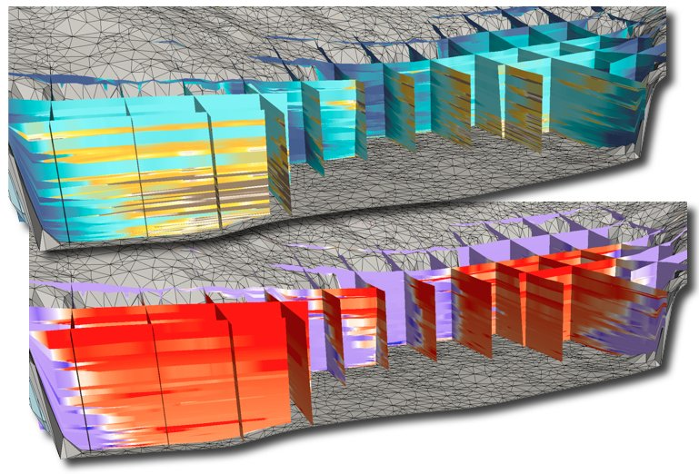

Stratigraphic & Geomorphic Forward Modelling Framework
Sediment Transport @ Geological Scales.
LECODE capability overview
Flow computation
To start with, you may have a look at this LECODE Presentation which gives a 6 slide
general overview of

The physics of open-channel flow is primarily based on an adapted Lagrangian formulation of shallow-water equations. The interaction between
flow and surface geology is performed by a non-uniform total-load sediment transport law. Additional hillslope processes are simulated using a
semi empirical methods based on a diffusion approach.
In
Mass wasting
Mass wasting encompasses different processes such as landslide, debris flow or slump.
For mass wasting,
The method consists in
(i) assessing the region prone to mass wasting (conditional threshold),
(ii) estimating the volume of
sediment based on mass wasting susceptibility map, and
(iii) propagating the sediment on the downslope areas using a diffusive approach.

Porosity & compaction

Going further...
A more detailed explanation of